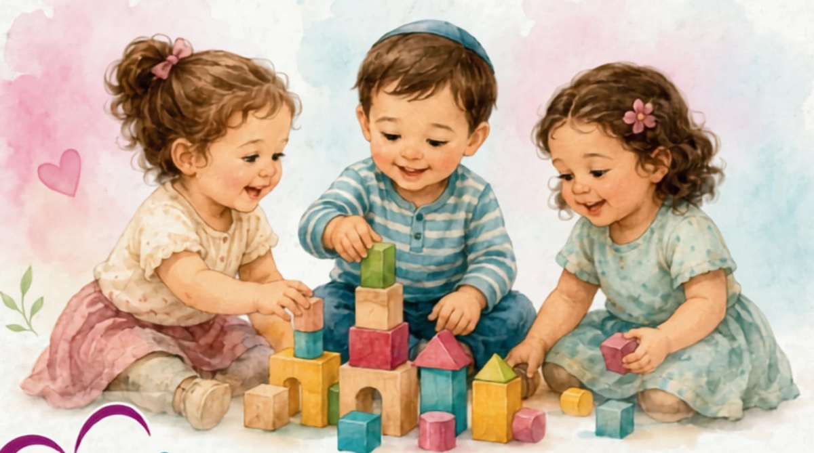
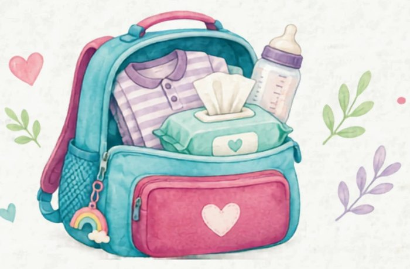

ברוכים הבאים למשפחת מעון חב"ד
מידע להורים | שנת הלימודים תשפ"זמחבקים • מטפחים • מצמיחים

החזון והעשייה שלנו
אנו שמחים לציין 18 שנות עשייה חינוכית, ששיאן במעבר למבנה החדש והמרווח שלנו!
החזון שלנו
מטרתנו היא לאפשר לכל ילד לממש את יכולותיו הרגשיות, החברתיות והקוגניטיביות, ולפתח עצמאות וביטחון עצמי באמצעות אקלים סביבתי מזמין, חם ותומך.
למה לבחור במעון חב"ד
צוות מסור
אנשי חינוך מקצועיים ואוהבים, הפועלים מכל הלב מתוך שליחות ומסירות.
מרחב מטופח
מבנה חדש, חצרות מרווחות וציוד פדגוגי מתקדם, המותאמים לצורכי הילדים.
שותפות ושקיפות
אנו מאמינים שקשר קשוב, רצוף ועקבי עם ההורים הוא הבסיס להצלחת הילד.
מעטפת התפתחותית
תוכנית חינוכית מקיפה בתחום המוטורי, השפתי, הקוגניטיבי והחברתי, לצד סדר יום קבוע.
הורים יקרים
אנחנו יודעים שמאחורי כל שם ברשימת הילדים נמצא עולם שלם.
אנו שמחים ונרגשים לקבל אתכם ואת ילדיכם למשפחת המעון, ומודים לכם על האמון שנתתם בנו.
הכניסה למעון היא התחלה חדשה ומשמעותית, לילדים וגם להורים. אנחנו כאן כדי להפוך אותה לרכה, נעימה ובטוחה, עם הרבה סבלנות, רגישות ואהבה.
חשוב לנו שכל ילד וילדה ירגישו במעון אהובים, בטוחים ושייכים, ויהנו מסביבה חמה ומקצועית שמאפשרת להם לגדול, להתפתח ולפרוח בקצב שלהם.
הרבי מליובאוויטש דימה את החינוך לטיפוח שתיל צעיר: דווקא בתחילת הדרך, כל השקעה, אהבה ותשומת לב מסייעות לו לצמוח חזק ולפרוח.
שעות הפעילות
אנו מבקשים להקפיד על איסוף הילדים בזמן, ולא לאחר משעת סגירת המעון. הקפדה על זמני האיסוף מאפשרת לצוות ולילדים לסיים את היום בנעימות.
היום שלנו במעון
- קבלת ילדים ע"י מטפלת פותחת
- התאספות בכיתות
- מפגש בוקר
- ארוחת בוקר
- חצר
- חצר בימבות
- הגשת חומרים
- משחק בפינות הגן / ג'ימבורי
- תיבה דידקטית
- ארוחת צהריים
- מנוחת צהריים
- מתחילים להתעורר
- קימה והחתלה
- ארוחת מנחה
- תיבה דידקטית
- פעילות צהריים
- מתארגנים לסיום
- סיום
לילדי קבוצת התינוקות הבוגרים, סדר יום זה יחל מיד לאחר החגים.
מה מביאים למעון?
כל מה שהילד צריך

- טיטולים
- מגבונים
- משחת החתלה
- בגדי החלפה
- מד חום אישי
- קרם גוף
- בקבוק אישי
🏷️ חשוב לסמן כל פריט בשם הילד
אוכלים טוב, גדלים בשמחה!
שלוש ארוחות מזינות שמלוות את הילדים לאורך כל היום
מה אוכלים אצלנו?
תפריט מאוזן ומגוון, מותאם לצורכי הילדים לאורך כל היום. המזון מבושל במקום, מחומרי גלם איכותיים ובטוחים. התפריט נבנה ומאושר ע"י תזונאית מוסמכת.
תזונה מיוחדת
אנו מקפידים על התייחסות לצרכים תזונתיים מיוחדים. ההתאמות נעשות בליווי ובאישור צוות הגן, ובמקרה הצורך נשמח לתאם פגישה אישית.
תמ"ל לתינוקות
התמ"ל מותאם לגיל התינוק ובהתאם להנחיות משרד הבריאות. אם המעון אינו מספק תמ"ל, יינתן להורים זיכוי חודשי בסך 52 ₪ עד גיל שנה, בהתאם לנהלים.
התפריט השבועי
| יום א' | יום ב' | יום ג' | יום ד' | יום ה' | יום ו' | |
|---|---|---|---|---|---|---|
| ארוחת בוקר |
|
|
|
|
|
|
| תינוקות | פירות טחונים (בננה, תפוח, אגס) + קוואקר/טחינה, דייסת קוואקר לתינוקות הבוגרים | |||||
| ארוחת צהריים |
|
|
|
|
|
פשטידת ירק חלת שבת שבת שלום! |
| תינוקות | מרק עוף/הודו וירקות טחון (בטטה, גזר, דלורית, קישוא, בצל) | |||||
| ארוחת מנחה | כריך גבינה פרי העונה | כריך חומוס פרי העונה | כריך טחינה פרי העונה | כריך חומוס פרי העונה | כריך טחינה פרי העונה |
|
| יום א' | יום ב' | יום ג' | יום ד' | יום ה' | יום ו' | |
|---|---|---|---|---|---|---|
| ארוחת בוקר |
|
|
|
|
|
|
| תינוקות | פירות טחונים (בננה, תפוח, אגס) + קוואקר/טחינה, דייסת קוואקר לתינוקות הבוגרים | |||||
| ארוחת צהריים |
|
|
|
|
|
פשטידת ירק חלת שבת שבת שלום! |
| תינוקות | מרק עוף/הודו וירקות טחון (בטטה, גזר, דלורית, קישוא, בצל) | |||||
| ארוחת מנחה | כריך גבינה פרי העונה | כריך חומוס פרי העונה | כריך טחינה פרי העונה | כריך חומוס פרי העונה | כריך טחינה פרי העונה |
|
שומרים יחד על בריאות הילדים
1. אין לשלוח ילד חולה
הנהלת המעון רשאית שלא לקבל ילד חולה עד להחלמתו המלאה. אם ילד חלה במהלך שהותו במעון, ניצור קשר ונבקש להגיע ולאסוף אותו בהקדם האפשרי.
2. מדחום אישי
יש להביא לכל ילד מדחום אישי, מסומן בשמו, שיישמר בתאו האישי. במקרה הצורך, מדידת החום תיעשה בבית השחי באמצעות המדחום האישי של הילד.
3. חוזרים לאחר מחלה
חזרת ילד למעון לאחר ארבעה ימי היעדרות בעקבות מחלה תתאפשר בצירוף אישור רופא, לאחר שהילד נבדק על ידו באופן פיזי.
4. מתן תרופות
צוות המעון אינו רשאי לתת לילדים תרופות מכל סוג. אם ילדכם נוטל תרופה באופן קבוע, היא תינתן על ידי אחד ההורים או אדם מטעמם בלבד.
5. במקרה חירום
אם במהלך השהות במעון יתעורר צורך בטיפול רפואי דחוף, לרבות פינוי באמבולנס, ההוצאות הכרוכות בכך יחולו על ההורים בהתאם לדין ולנהלים הרלוונטיים.
לוח חופשות
לשנת הלימודים תשפ"ז. הלוח מתפרסם גם בלוח המודעות של המעון.
| מועד | ימים | תאריך | הערות |
|---|---|---|---|
| ראש השנה | שישי עד ראשון | 11.09-13.09כ"ט אלול עד ב' תשרי | חופש |
| ערב יום כיפור - יום כיפור | ראשון-שני | 20.09-21.09ט'-י' תשרי | חופש |
| ערב סוכות, סוכות ושמחת תורה | שישי - שבת (בשבוע שלאחריו) | 25.09-03.10י"ד-כ"ב תשרי | חופש |
| תענית אסתר | שני | 22.03י"ג באדר | מסיימים ב-12:00 |
| פורים | שלישי-רביעי | 23.03-24.03י"ד-ט"ו באדר | חופש |
| פסח | שישי-רביעי (בשבוע שלאחריו) | 16.04-28.04ט' ניסן - כ"א ניסן | חופש |
| יום הזיכרון ויום העצמאות | רביעי-חמישי | 11.05-12.05ד'-ה' אייר | ד' אייר (11.5) מסיימים בשעה 12:00 |
| שבועות | חמישי-שבת | 10.06-12.06ה'-ז' סיון | חופש |
פתיחה וסיום
פתיחת שנה"ל תשפ"ז: יום ו', ט"ו אלול, 28.8.26
סיום שנת הלימודים: ז' מנחם אב, 10.8.27
מסיבות סוף שנה
קבוצת הבוגרים: יום ו', י"א תמוז, 16.7.27
קבוצות הפעוטות והתינוקות: יום ו', ד' תמוז, 9.7.27
הבהרות והשלמות לימי החופשה
- 3 ימי חופשה בחודש אוגוסט - כנגד ימי חול המועד סוכות.
- 2 ימי חופשה בחנוכה - כנגד 2 ימי ערב פסח.
- ט"ו באדר (פורים) - כנגד יום נוסף בסיום שנת הלימודים.
עלויות וגבייה לשנה"ל תשפ"ז
עלות שכר הלימוד כפופה לטבלת שכר הלימוד של משרד העבודה והרווחה, לפי 12 חודשי תשלום. שכר הלימוד נקבע לפי תעריפי משרד הכלכלה, מבחני ההכנסה ודרגת הזכאות של המשפחה.
כל מי שנולד מתאריך 01/06/2025
כל מי שנולד בין 01/09/2024 ל-31/05/2025
כל מי שנולד בין 01/01/2024 ל-31/08/2024
דמי רישום
133 ₪
ביטוח תאונות אישיות
69 ₪, תשלום חד פעמי שנתי
הזנה - תוספת ארוחות
בשריות במעון 77 ₪
התעריפים המפורטים הם תעריפי תשפ"ו. עם פרסום תעריפי תשפ"ז, שכר הלימוד יעודכן בהתאם, וההפרש ייגבה רטרואקטיבית בחודש שבו יפורסמו התעריפים החדשים. עד לקבלת דירוג רשמי ממשרד הכלכלה במסמך כתוב, ההורים מתחייבים לשלם את שכר הלימוד במלואו.
הסדרת התשלום
- אופן התשלום
- הוראת קבע, 12 תשלומים, בכל 1 או 5 לחודש
- בנק
- מסד, סניף 515, חשבון 394505
- שם החשבון
- הקהילה צור הדסה
- אסמכתא
- לשלוח לכתובת mgchabad.z.h@gmail.com
לא תתאפשר כניסת הילד למעון טרם הסדרת התשלום.
רגע לפני שמתחילים...
מהרגע שהילדים נכנסים בשערי המעון, אנחנו מקבלים על עצמנו את הזכות והאחריות להכיר גם אנחנו את העולם הקטן והמיוחד הזה. אנחנו מאמינים שמעון טוב נבנה מתוך שותפות אמיתית בין הבית לצוות, מתוך תקשורת פתוחה, אמון, הקשבה וכבוד הדדי.
מאחלים לנו שנה שבה הילדים יגיעו בכל בוקר בשמחה ויחזרו הביתה עם חיוך: שנה של חוויות טובות, חברויות, למידה, התפתחות וצמיחה.
באהבה, צוות מעון חב"ד צור הדסה